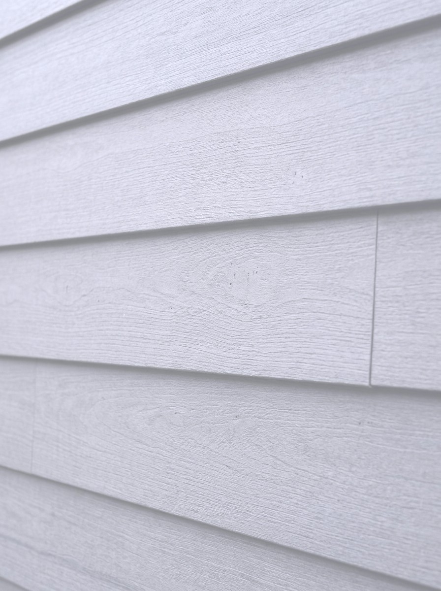

Architectural Heavyweight
Explore Material Specs →
Fiber Cement Siding
Uncompromising structural resilience combined with authentic deep shadow lines. Fire-rated, impervious to pests, and factory-finished with baked-on ceramic pigments that preserve richness under intense UV exposure.
Profile:
Horizontal Lap & Large Panels
Maintenance:
Moderate things
Warranty:
30-Year Non-Prorated